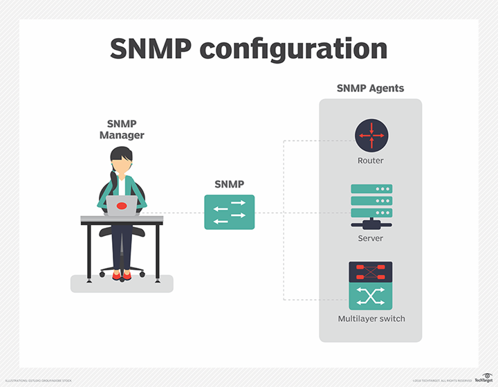

Simple Network Management Protocol
Simple Network Management Protocol (SNMP) is an application-layer
protocol used to manage and monitor network devices and their
functions. SNMP provides a common language for network devices to
relay management information within single- and multivendor
environments in a local area network or wide area network .The
most recent iteration of SNMP, version 3, includes security
enhancements that authenticate and encrypt SNMP messages as well as
protect packets during transit.
Components of SNMP
There are four main components in an SNMP-managed network:
-
SNMP agent:This program runs on the hardware or
service being monitored, collecting data about various metrics
like bandwidth use or disk space. When queried by the SNMP
manager, the agent sends this information back to the management
system. An agent may also proactively notify the NMS if an error
occurs. Most devices come with an SNMP agent preinstalled; it
typically just needs to be turned on and configured.
-
SNMP-managed devices and resources: These
are the nodes on which an agent runs.
-
SNMP manager (aka NMS):This software platform
functions as a centralized console to which agents feed
information. It will actively request agents send updates via SNMP
at regular intervals. What a network manager can do with that
information depends heavily on how feature-rich the NMS is. There
are several free SNMP managers available, but they are typically
limited in their capabilities or the number of nodes they can
support. At the other end of the spectrum, enterprise-grade
platforms offer advanced features for more complex networks, with
some products supporting up to tens of thousands of nodes.
-
Management information base (MIB): This database is a text file (.mib)
that itemizes and describes all objects used by a particular
device that can be queried or controlled using SNMP. This database
must be loaded into the NMS so that it can identify and monitor
the status of these properties. Each MIB item is assigned an
object identifier.

How SNMP works
SNMP performs a multitude of functions, relying on a blend of push
and pull communications between network devices and the management
system. It can issue read or write commands, such as resetting a
password or changing a configuration setting. It can report back how
much bandwidth, CPU and memory are in use, with some SNMP managers
automatically sending the administrator an email or text message
alert if a predefined threshold is exceeded.
In most cases, SNMP functions in a synchronous model, with
communication initiated by the SNMP manager and the agent sending a
response. These commands and messages, typically transported over
User Datagram Protocol (UDP) or Transmission Control
Protocol/Internet Protocol (TCP/IP),are known as protocol data units
(PDUs):
-
GET:Generated by the SNMP manager and sent to an
agent to obtain the value of a variable, identified by its OID,
in an MIB .
-
RESPONSE: Sent by the agent to the SNMP
manager, issued in reply to a GET request. Contains the values of
the requested variables.
-
GETNEXT: Sent by the SNMP manager to agent
to retrieve the values of the next OID in the MIB's hierarchy.
-
GETBULK: Sent by the SNMP manager to the
agent to obtain large tables of data by performing multiple
GETNEXT commands.
-
SET: Sent by the SNMP manager to the agent
to issue configurations or commands.
-
TRAP: An asynchronous alert sent by the
agent to the SNMP manager to indicate a significant event, such as
an error or failure, has occurred.